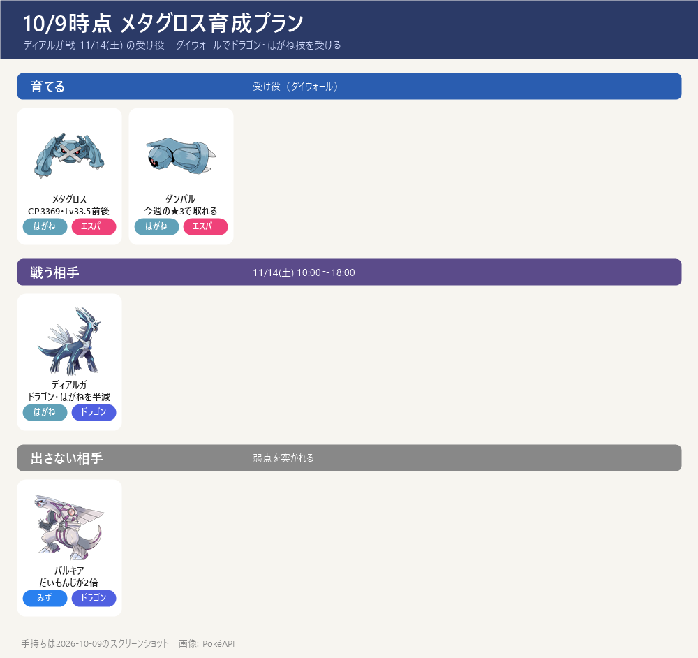

- 役割：ダイマックス ディアルガ（11/14 土）の受け役（ダイウォール）。はがねタイプなのでドラゴン技・はがね技を半減で受ける
- パルキア戦（11/15）には出さない（だいもんじが2倍）
今の状態（10/9）

- CP3369・個体値 10/14/15（約87%）・レベル33.5前後（強化のすな7,000とCPから逆算）。ダイマックス
- 防御14・HP15 なので受け役向きの良い個体。もう十分育っている
- 手持ち：ほしのすな 227,622（サーナイトと共通）／ ダンバルのアメ 35 ／ アメXL 15
- 通常技はれんぞくぎり（むし）→ ディアルガには半減。受け役なので大きな問題ではない
強化の順番
- まず確認：ダイウォールが使えるか（ポケモン詳細 → ダイマックス → マックス技の画面で、ダイウォールに鍵マークがあれば未解放）。最初はダイアタックしか使えない
- ① ダイウォール解放（未解放なら最優先）：MP 400 ＋ ダンバルのアメ 70（今35 → あと35）
- ② レベル33.5 → 35：すな約21,000 ＋ アメ24
- ③ ダイウォール Lv1 → Lv2（余裕があれば）：MP 600 ＋ アメ120
- 参考：レベル40まではすな約109,000＋アメ142。受け役としてはレベルよりダイウォールのほうが効く
- ①＋②で アメ約94（あと59）・すな約21,000・MP 400
設置でアメを稼ぐ
- ①ダイウォール解放（あと35）→ 設置 7回（5個ずつ）〜12回（3個ずつ）
- ①＋②（あと59）→ 設置 12〜20回 → 1体なら約2〜3週間で 11/14 に間に合う
- ①＋②＋③（あと179）→ 設置 36〜60回 → 2体でも約18日以上で、ぎりぎり
- ダンバルのマックスバトル：今週の★3にいる（10/11(日) 21:00 まで）。仲間と組めれば、勝つたびにダンバルを捕まえてアメ（＋XL）
サーナイトと合わせた配分
- ほしのすな：サーナイト約86,000 ＋ メタグロス約21,000 ＝ 約107,000 → 残り約12万をカイリキー・ドリュウズ（入手後）へ
- MP：サーナイト 600 ＋ メタグロス 400
- 設置の回し方の例：毎日 ラルトス系2回 ＋ メタグロス1回 ＝ 3回（750MP） → 無料の 800MP に収まる
- 11/14(土)：ディアルガ戦。並び例 カイリキー（攻撃）／メタグロス（受け）／ハピナス（回復）
出典: マックス技のコスト: ポケらく・攻略大百科 ／ 技: 9db・ポケらく・PvPoke ゲームデータ ／ 設置: 9db・アメブロ ／ 手持ち: スクリーンショット（2026-10-09）
画像: PokéAPI ／ 更新 2026-10-09